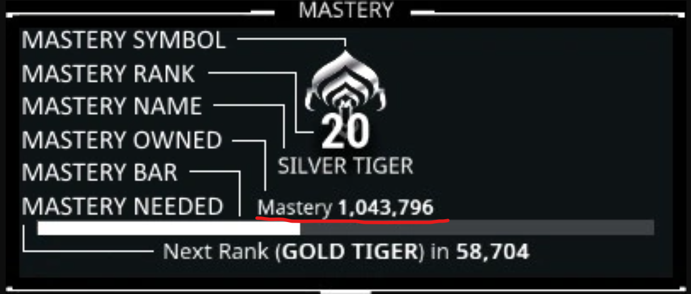

Hello!
Welcome to CalcMR a Warframe Mastery Level Up Calculator! This tool helps Warframe players calculate their current Mastery Rank, track progress toward Legendary Rank 4 (LR4), and determine the optimal number of weapons and deployables needed to reach higher ranks based on XP distribution.
Enter your current Mastery Rank XP, adjust the weapon-to-deployable distribution, and get detailed insights into your progress and item requirements. Weapons include Primaries, Secondaries, Melees, etc (Any weapon with 3000 XP at max rank: the number is actually 3058 XP on average if we're counting kuva and tenet weapons). Deployables include Warframes, Sentinels, Companions, Archwings, and K-Drives (6000 XP items at max rank). Other Mastery sources like Necramechs, Intrinsics and Missions have been disregarded for better calculations, they are more or less useful. This calculator is designed to assist both new and veteran players in planning their Mastery Rank journey.
For feedback, issues, or contributions, visit my GitHub repository linked at the top of the page.
How to use CalcMR
it is simple, all you need to do is open Warframe and enter your current MR XP (no commas).
Why this tool?
I mainly made CalcMR for fun, I also made it to have a fast and clear idea of how much equipment I needed to reach certain Mastery Levels, it's quick and easy requiring no effort or setup.